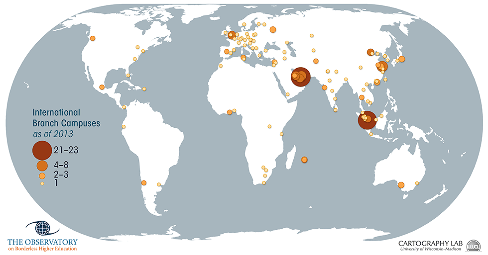
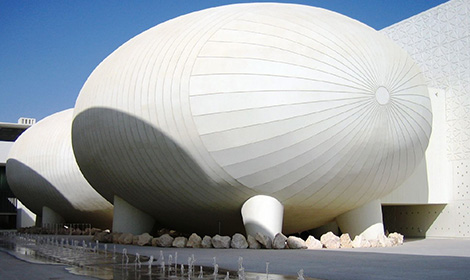
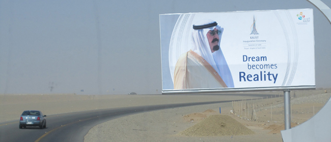
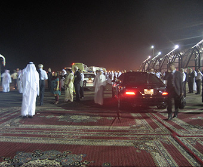

Unit 2: Universities, City-Regions, and New Territorial Configurations

Take a look at this world map of international branch campuses. What do you notice?
Perhaps the fact that international branch campuses seem to be concentrated in particular parts of the world caught your eye—the Gulf region, China, Malaysia, or Singapore? Or maybe you noticed that dotted around the world, from South Africa to Chile and Canada, as well as many countries across Europe, there are smaller concentrations of branch campuses? You might also have noticed that the United States and Australia, two countries with very large numbers of international students enrolled in their respective graduate and undergraduate programs, appear to host very few branch campuses, though Adelaide (the capital city of South Australia), of all places, seems a curious anomaly [any Adelaideans (sp?) out there?!].
We imagine you have a number of questions running around in your head. What exactly is an international branch campus (IBC)? We’ll have more to say about this later, but think, for example, about Malaysia’s Limkokwing University Botswana campus or the University of Nottingham, Malaysia. The Observatory on Borderless Higher Education (OBHE), that we partnered with to produce this map, defines them this way:
Box 1 – Definition of International Branch Campus
An international branch campus (IBC) is a type of foreign educational outpost that is established in a country other than the one where the home (primary) campus exists. It typically has a physical presence in the host country, and is at least partly owned by the home institution. The students can earn degrees in the name of the home institution.
Source: OBHE, 2012
When did IBC’s first begin to appear, and why? Which universities and countries are promoting these arrangements, and why? How have the patterns evident on this map changed over time? What kind of student enrols, and why? How are branch campuses regulated, especially when the home institution is likely to have a very different regulatory environment from the host country? Where do the construction workers come from who build the campuses? How do these kinds of enterprises transform the landscapes in which they are located, and what are the consequences for host city region development more generally?
These are all important questions, and ones we’ll be exploring with you, for they help us unravel the big question at the heart of this week’s class: What do the changing spatial geometries of universities—as they press and spread down, out, and up in city, regional, and global spaces, and engage in highly complex forms of entanglement in their environment(s)—mean for the very definition of a university, especially for how universities are organised and governed, and for key ideas that define a university like academic freedom and university autonomy?
Universities and Place
Towns and cities have always mattered to the universities who inhabit them, and vice versa. From ancient towns in China, to medieval cities in Europe, and modern cities in geographies as diverse as North America, Australia or Latin America, universities make, mark, and memorialise cities, sometimes in quite spectacular fashion.
Take a look at the stunning buildings of the Universidade de Brasilia, or Qatar’s Education City, which houses a number of high status universities from around the globe.
-

Universidade de Brasília Instituto Central de Ciências Minhocão corredor
by Guillermo Arévalo Aucahuasi, CC BY-SA 3.0
-

Weill Cornell Medical College in Qatar
by Flickr User:vobios, CC BY 2.0
These architectural statements aim to communicate the importance of knowledge and learning, as well as to celebrate the development of a city or nation in which these buildings are located.
But universities of all sorts, branch campuses included, are not just aesthetic statements, or status symbols of higher learning. Rather, they play an important role in their local economy and its community. They generate significant revenues as a result of concentrations of students and staff, are typically one of the largest employers in their environments, attract other smaller and larger firms who might collaborate with or benefit from the research activity of the university, and engage in diverse forms of cultural and aesthetic production that enrich the localities where they are positioned. These are all basic but very important points made by Nigel Thrift, the University of Warwick’s Vice Chancellor (see his podcast below). For many, being a modern city or nation means having a university.
Yet universities’ relationships to their urban environments are complicated. Historians of the medieval university describe an often turbulent relationship between what came to be known as ‘town and gown’ as a result of the drunken and transgressive behavior of students. However, threats over the students leaving meant the town might lose an important source of revenues, causing the city elders to capitulate to the demands of the students. This gave students and the university considerable negotiating powers with the local community, with scholars often exempted from local rules, such as paying taxes.
Plaque from Bascom Hall—University of Wisconsin-Madison
As universities developed, another important dimension to the ‘idea of a university’ was that scholars should be given a degree of autonomy over their affairs so as to protect themselves, and also the university, from direct political interference. Academic freedom and university autonomy continue to be two key and interrelated ideas related to university governance and academic life, and arise directly out of this claim to autonomy in the pursuit of truth. See the statement on this plaque just outside the entrance to Bascom Hall at UW-Madison, for example, the outcome of a famous (in the US) struggle over academic freedom.
However, if academic freedom and self-governance are largely secured in national and sub-national legislation, then clearly there are major challenges facing universities as they both regionalise and globalise. In other words, universities that venture abroad may be confronted with regulatory and political challenges that are different from those in their ‘home’ spaces. Academic freedom and relative autonomy – core principles associated with the origins of the medieval university, and still critically important principles today, are themes that will pop up throughout this class, and in many of the other weeks of material.
The Idea of a University...and its History
Box 2: Establishment of Universities over Time (through 1303)
| Early Centres for Higher Learning | Founded |
|---|---|
| Shanghai 'higher school' / China | Yu period
2257-2208 BC |
| Imperial Central School | Zhou dynasty
1046-249 BC |
| Takshashila University, Taxila/Pakistan | 7th Century, BC |
| Nalanda University, Bihar/India | 5th Century, BC |
| Plato’s Academy/Athens | 387 BC |
| Najing University/China | 258 AD |
| University of Salerno/Italy | 9th Century |
| University of Magnaura/Constantinople | 848 AD |
| Al-Azhar University, Cairo | 988 AD |
| Temple of Literature, Hanoi/Vietnam | 1076 |
| Degree Granting Universities | Founded |
|---|---|
| University of Bologna/Italy | 1088 |
| University of Paris/France | 1150 |
| University of Oxford/England | 1167 |
| University of Cambridge/England | 1209 |
| University of Salamanca/Spain | 1218 |
| University of Montpellier/France | 1220 |
| University of Padua/Italy | 1222 |
| University of Naples/Italy | 1224 |
| University of Toulouse/France | 1229 |
| University of Coimbra/Portugal | 1290 |
| Universidad Complutense de Madrid/Spain | 1293 |
| University of Lleida/Spain | 1300 |
| University of Rome La Sapienza/Italy | 1303 |
Source: Drawn from The Origin of Universities
Before turning our attention to global processes today, it is useful to remind ourselves that the university is one of the oldest formal education institutions, with a history that can be traced back beyond the medieval period to centres of higher
learning (see Box 2 at right). This longer history is important for reminding us of the Western euro-centric views many of us hold of the history of advanced knowledge creation.
In 2013 Susan had the opportunity to visit Hanoi, Vietnam, and was delighted to find herself in the Temple of Literature, established in 1076. The Temple of Literature was in effect Vietnam’s first university. Created to honour Confucius and to educate the sons of mandarins, the Temple of Literature was eventually opened to talented commoners, in the 13th Century. These students used their higher learning to advance their careers in the civil service.
In the 15th century the practice of carving the names of the new doctors into stone plaques (stelae) which we can see rising from the backs of turtles (see image 1) was introduced. Today, some 82 stelae dot the courtyard, featuring the names of around 1306 doctorates awarded for successful completion of demanding examinations.
Temple of Literature – Hanoi, Vietnam
Original photograph: Susan Robertson
You’ll also notice from Box 2 that centers for higher learning have a long history in South East Asia, as well as in Egypt and Turkey, a fact that is often forgotten by modern writers on the university. Instead, they tend to start with the now-famous University of Bologna in Italy, which began to grant degrees in 1088.
It is at this point that we see a steady expansion in the number of universities being created in European cities and beyond, which come to be known as the medieval universities. And it is degree-awarding capability, and recognition of that capability, which continues to define to this day which providers of higher learning can call themselves a university or not.
By the beginning of the 20th Century, most regional and capital cities, at least in the Global North, housed at least one university, often with a mission tied to local and regional development as part of a national effort to improve. Many nations also took pride in having a national university as a flagship institution. These universities were expected to play important developmental roles nationally and regionally.
Over time, the expansion and concentration of research-intensive universities in cities in the US, for example, led the scholar of higher education, Clarke Kerr, to describe them in 1963 as ‘Cities of Intellect,’ making them not only strong centers of economic activity and intellectual powerhouses, but also resources for local, regional, national, and global competition. More recently, many of these well-known universities have sought to expand their institutional fabrics into other parts of the world via the establishment of international branch campuses in Asia and the Gulf region, as noted above, creating what might be viewed as a new phase in the development of the university.
By anyone’s reckoning, the various developments under way, as universities engage in the latest phase of globalizing, are diverse, fast moving and very dynamic. Even the language we have typically used to talk about the university is changing, in part because of new initiatives, and in part because old ways of thinking are no longer able to fully grasp quite what is going on. For instance when a public university globalizes by setting up a branch campus in Asia, is it still public, or is it private? Many Asian governments require branch campuses to be legally owned by an incorporated private entity and they are not offered direct public subsidies. Given this, higher education regulators in Asia describe these as private and not public. And this is just one of the examples we can point to. What this means is that we need to push our geographical and sociological imaginations forward, and think about evolving landscapes—from urban contexts to new virtual spaces—and the structural agendas that are reshaping the relationship between universities and the places which they inhabit.
One relationship that is particularly important to consider is the one between the university and the city-region, which is changing as a result of the pressure on universities to become new kinds of powerhouses for the economy. How do cities engage with universities newly called to be engines for regeneration and city development, beacons in the competition for global talent, or magnets for investment to invigorate local economies and cities?
Global Urbanization/Global Cities
There are two key structural changes with respect to the urban context that we’d like you to think about. The first is that of global urbanization, and the second is that of the concentration of power in select cities, specifically those that scholars like Saskia Sassen have deemed ‘global cities.’
Urbanization, the process of development that relocates an increasingly significant proportion of human activity to state-defined “urban” from “rural” areas, has been underway for hundreds of years, with significant differences across space and time. In the last decade or so, we’ve entered the era of ‘global urbanization’—one where the majority of the world’s population now lives in ‘urban’ areas. This is a complicated and evolving development process, but one that is readily visible in this series of maps (see Figures 1-4 below) from the United Nations’ World Urbanization Prospects, the 2011 Revision :
Figure 1: Percentage of urban population and agglomerations by size class, 1960
Source: United Nations, Department of Economic and Social Affairs, Population Division: World Urbanization Prospects, the 2011 Revision. New York 2012.
Figure 2: Percentage of urban population and agglomerations by size class, 1980
Source: United Nations, Department of Economic and Social Affairs, Population Division: World Urbanization Prospects, the 2011 Revision. New York 2012.
Figure 3: Percentage of urban population and agglomerations by size class, 2011
Source: United Nations, Department of Economic and Social Affairs, Population Division: World Urbanization Prospects, the 2011 Revision. New York 2012.
Figure 4: Percentage of urban population and agglomerations by size class, 2025
Source: United Nations, Department of Economic and Social Affairs, Population Division: World Urbanization Prospects, the 2011 Revision. New York 2012.
This transition raises both opportunities and challenges for higher education systems and institutions, especially since most are fixed in space, often in inner city or inner suburban areas, and expect students to come to their campuses. And yet urbanists like Roger Keil, TG McGee, Ananya Roy, and Deyan Sudjic have pointed out that we are seeing not just the growth of the proportion of the world’s population living in cities, but also the emergence of new spatial patterns and orders as a result. These are associated with more dispersed, and therefore less dense, concentrations of people than in older denser urban areas.
This emerging pattern is associated with terms like ‘sprawl’, ‘extended metropolitan regions’, ‘exurbs’, ‘edge cities’, ‘borderless cities’, ‘megapolitan areas’, ‘megalopolises’, the '100 Mile City,' and the like. There are some important differences between these terms and their origins, some of which go back many decades. For the purposes of this class, we’ll leave the differences aside for a moment and focus on patterns of similarity.
Consider these graphics (Figures 5-7 below) which flag important dimensions of the global urban era:
Figure 5: Urban population projections, by region (2010-2030)
Source: UN, 2010; UN Habitat's Global Report on Human Settlements 2011 (p. 3)

Figure 7: Selected global city-regions, urban corridors and mega regions
Source: UN Habitat's State of the World's Cities 2010/2011
The second urban condition worth taking note of, at a global level, is the emergence of global cities. Global cities have themselves become a major object of research. For our purposes here, we want to focus on the role of global cities—such as London, New York, Barcelona or Hong Kong—in acting as ‘key basing points’ for transnational corporate headquarters. In doing so, global cities become embedded within global circuits of capital, both facilitating and reflecting the material and symbolic power of global capital. In other words, global cities play key strategic roles in servicing global capital through agglomeration effects, a point well made by the urbanist, Saskia Sassen, who suggests in The Global City (2011, 3-4) that:
[A] combination of spatial dispersal and global integration has created a new strategic role for major cities. Beyond their long history as centres for international trade and banking, these cities now function as centres in four new ways: first, as highly concentrated command points in the organization of the world economy; second, as key locations for finance and specialized service firms, which have replaced manufacturing as the leading economic sectors; third, as sites of production of innovations, in these leading industries; and fourth, as markets for the products and innovations produced. These changes in the functioning of cities have had a massive impact upon both international economic activity and urban form: cities concentrate control over vast resources, while finance and specialized service industries have restructured the urban social and economic order. Thus a new type of city has appeared. It is the global city (2001: 3-4).
In short, global cities are:
- command points in the organisation of the world economy;
- key locations and marketplaces for the leading industries of the current period, which are finance and specialised services for firms; and
- major sites of production for these industries, including the production of innovations (Sassen, 1994: 4).
There are also variants on the idea of a global city: so called ‘gateway cities’, like Melbourne or Vancouver, play key gateway (duh!) functions for material and non-material flows of goods, services, people, ideas, and so on, without necessarily playing the command and control functions a global city plays. As an example, Vancouver is not a very powerful finance or corporate headquarters city, but it is a globally significant point of entry for migrants (permanent and temporary) and tourists, increasingly from East Asia (see the important work on Vancouver’s roiling immigration situation by researchers in the University of British Columbia’s Geography Department, as well as alum Johanna Watters, all associated with their Metropolis Project).
Dr. John Hepburn is Professor of Chemistry and Physics & Astronomy, and Vice President Research & International, University of British Columbia (UBC).
Take a close listen to his comments about UBC’s International Strategic Plan, published in March 2011, and especially his reflections on how the multiple contexts UBC is embedded in have shaped this strategy.
What the gateway function can do is alter the complexion of universities, whether they plan it or not. The University of British Columbia (UBC) of today is very different than it was when one of us (Kris) attended it as an undergraduate, when it looked East and North vs. West to Asia. However, as UBC’s John Hepburn point out in the podcast to the left, an over-dependence on East Asia can also be a problem, and the university is considering reviewing its internationalising strategy to include other countries, such as Brazil, to ensure there is not an over-dependence on particular ‘gateway’ populations. This said, it’s worth noting that UBC is using the gateway-related demographic transformation in Vancouver, as well as its high quality of life, to underlie its continued development of high quality/impact research capacity on East Asian (especially Chinese) development issues, some of which are politically sensitive.
Hepburn’s comments are also worth relating back to last week’s topic of globalizing universities.
Given these externally-driven dynamics, gateway and especially global cities have become associated with volatile economies, dense nodes of information and social networks, social polarisation, globalised property markets, social diversity (through migration in particular), cosmopolitanism, a complex of higher education institutions, creativity, vibrancy, and also considerable human suffering as these dynamics produce growing inequalities within the cityscape. These cities are thus the visible manifestation of the global economy. In fact, according to Sassen and other global city researchers and consultants like AT Kearney, some 30-40 cities play an outsized role in holding together the entire world system.
Not surprisingly, global cities like New York, London, Paris and Tokyo are associated with a disproportionate number of globally-ranked universities. They have also, more recently, become target cities for many non-global city universities via the mechanisms we discussed in Week 1 (Globalizing Universities). These cities tend to be associated with complex inter-city networks of universities like the The Alliance Program, “a non-profit transatlantic joint-venture” between New York-based Columbia University and three “prestigious” Paris-based institutions: the École Polytechnique, Sciences Po, and Panthéon-Sorbonne University.”
Universities, Cities and the Innovation Agenda
Over the past one to two decades, universities have become linked much more closely to the knowledge economy agenda. For rentier states, such as Saudi Arabia, this means investing in building universities from scratch, where, in some cases, there has been no history of higher learning. By building up a higher education sector, these Arab states hope to protect themselves from an over-dependence on oil revenues, on the one hand, and to develop research and innovation capacity to help them solve pressing sustainability issues such as water engineering, on the other.
Amsterdam University College (AUC), a new initiative in the Netherlands, is using a liberal arts education as the basis for developing a new kind of student (and worker), one who is globally competent, critical, analytical, and able to fluidly work in teams (listen to this podcast with Dr. Marijk van der Wende, AUC’s founding dean and a scholar with longstanding interests in the globalization of higher education).
Amsterdam University College’s New Building on the Amsterdam Science Park
Photo courtesy of Amsterdam University College
For the city, this means attracting the kinds of students from around the globe who can help Amsterdam, the Randstad region, and the Netherlands maintain a competitive edge in the global knowledge race. And in doing so, AUC draws upon its cosmopolitan context to help create a distinctive 21st century form of a liberal arts education.
For further reading on this fascinating city-region, see:
- OECD (2007) OECD Territorial Reviews: Randstad Holland, Netherlands, Paris: OECD.
- Dubarle, P., Holm-Nielsen, L, Olds, K., Timmerhuis, V., Yelland R. (2010) OECD/IMHE Reviews of Higher Education in Regional and City Development: Amsterdam , Paris: OECD, 92 pp.
- Redden, E. (2013) ‘Liberal arts go Dutch,’ Inside Higher Ed, 8 February.
- Van Rees, J. (2013) ‘On Amsterdam's plans to establish a third university,’ Inside Higher Ed, 26 April.
By way of contrast, Singapore has turned to the development of a regional hub for higher education with the explicit purpose of building up its knowledge/innovation base to enable it to overcome its lack of natural resources. In the cities where we both live—Bristol and Madison—the local universities have been challenged to look at new ways to develop relationships with industry. By learning what problems local industry is confronting, we are told, the university can better turn its research capacity toward developing practical innovations that might also in turn create value for the university, the local economy and the nation.
Yet invoking an innovation agenda does not necessarily produce innovation. Why? Because ‘innovation’ is an unruly process that has long stumped analysts and advocates. Indeed, there is a veritable cottage industry of scholars who work on universities and innovation, innovation systems, innovation networks, and associated phenomena. This agenda intersects with higher education systems, institutions and practices in a variety of ways, including the development of research and advocacy programs regarding university industry linkages, entrepreneurship, technology transfer, the role of higher education institutions (HEIs) in R&D, the role of HEIs in city-region development, online education (most recently), and so on.
But how does this agenda intersect with the agenda for the globalization of higher education and research? Well, in a wide variety of ways, especially given the globalizing nature of economies and societies. Researchers who focus on all of the above phenomena are increasingly grappling with the impact of ‘global pipelines’ guiding flows of people and information between multiple sites; transnational flows of mobile people, technologies, and venture capital; and multi-sited epistemic communities that produce the jointly authored publications mapped here.
The Changing Spatial Re/organizing of Universities
Movements ‘down’, ‘out’ and ‘up’
As the sociospatial structures of cities are changing, so too are the sociospatial structures of universities as they respond to innovation agendas elsewhere, to new sources of funding, to the opportunities to absorb excess demand for places, and so on. In short, universities are now in motion again, taking new development paths and generating quite distinct global patterns that depart quite significantly in shape, form, and logic from the medieval university.
We’ve found it helpful to view these different spatial strategies and trajectories as movements taking place ‘down’, ‘out’, and ‘up’.
By movements downward, we mean university projects that aim at re/connecting, often in new ways, with the place in which their university is located. In some cases this occurs through the return to the historic mission of the university: to connect with, and service, the local economy. In other cases, movements downward engage with local communities to ensure relevance to local firms and communities, a point made very clearly by University of Warwick Vice Chancellor, Nigel Thrift, in the podcast below. Universities are also conscious that place matters to students, and that when place is part of the global marketing strategy, then delivering on ‘place’ (safety, facilities, transport and so on) means engaging with the city to ensure these things are being properly addressed.
Dr. Nigel Thrift is Vice-Chancellor and President, University of Warwick, UK. Take a listen to this podcast where Nigel reflects on how Warwick’s mission and activities shape the university’s connections to the city-region it is embedded in (e.g., via a locally-placed global car manufacturer, Jaguar Land Rover), as well as in two other cities Warwick has deep partnerships in – New York City (via the Center for Urban Society and Progress) and Melbourne (via the Monash-Warwick Alliance).
By movements outwards we mean initiatives and connections that stretch out into global space and connect with new places well beyond the nation-state. This can take the form of extending into an outpost, such as a branch campus (ranging from one department to a whole suite of programs) in a host country (see, for example, the Qatar Foundation’s ‘Education City’ or the Dubai Knowledge Village in Dubai, Arab Emirates); the development of a stand-alone campus, such as Monash University, Malaysia or Nottingham University’s China Campus Ningbo; the development of consortia, such as Universitas 21 or the World Universities Network, which connect universities together across the globe, often around grand challenges; or new regional initiatives, such as the European Higher Education Area or Mercosur (which we develop in Week 4 when we look at Regions).
There are various reasons for these movements outward, but a major one is securing new sources of revenue for the home institution and positioning the university globally in a highly competitive and increasingly volatile arena. The race to establish institutional alliances also serves a host of economic and diplomatic purposes for partner institutions and their host countries as part of an expanding web of global convergences. Finally, outward movements enable universities to jump scale and connect to innovation systems associated with other city-regions. Scale and cost are frequent topics; capacity and long-term sustainability are less so.
By movement upward we mean the building from scratch of universities which, in some cases at least, seem to almost literally pop up overnight, particularly when we consider how long it takes for a fully-fledged university with large teaching and research capability to be established. Examples here include the creation of a new $13 billion university in Saudi Arabia, King Abdullah University of Science and Technology (KAUST), which we profile below; the proposed Applied SciencesNYC , currently under development and which we also profile below; the Universidade Federal da Integração Latino-Americana, otherwise know as UNILA, currently being developed to service students around the Latin American region and create a Latin American knowledge base for its disciplines; and Nazarbayev University, Kazakhstan, which we also profile in this class. The scale of this approach varies, from exclusive partnerships between an established university and a start-up (e.g. MIT with Skolkovo Institute of Science and Technology outside Moscow) to multi-partner collaborations between already-existing universities (the National University of Singapore) with Yale, Johns Hopkins, Duke, NYU, ETH Zurich, and MIT.
In truth, however, for many universities experimenting with global positioning and developments, these movements down, out, and up tend to be multiply deployed. But in considering them this way, we get a sense not only of the diverse spatial strategies being pursued (down, out, up), but also of their implications for what universities do (teaching/research/enterprise). These new global and regional formations require new techniques of governance, especially when they involve distance or new corporate partners, with consequences for staff who work in these new kinds of spaces. This brings us back, then, to self-governance and academic freedom.
Movements outward: Nazarbayev University’s hybrid model
[This case is based upon a report by Lee Rensimer (a project assistant in the quality assurance working group for the UW-Madison - Nazarbayev University partnership at Wisconsin-Madison) as well as various media reports]
Originally conceived as the New University of Astana, Nazarbayev University (NU) was given its presidential namesake in the early developmental stages when its vision as a national university dramatically expanded to a world class-aspiring research flagship. Modeling itself on elite American universities, it brings together top international programs and faculty, state-of-the-art research facilities, and predominantly Kazakh students in an English-speaking environment. As Kazakhstan aims to diversify its economic output and shift towards knowledge-intensive industries, NU is positioning itself to be the nation’s engine for innovation by producing its future researchers, intelligentsia and knowledge economy workers.
NU has eight high-profile international partners, each contracted to attend to one of NU’s academic domains:
| Partner University | Country | Academic Domain |
|---|---|---|
| University College London | UK | School of Engineering, Center for Preparatory Studies |
| Carnegie Mellon University (original partner; now University of Pittsburgh) | USA | School of Science and Technology |
| University of Wisconsin-Madison | USA | School of Social Sciences and Humanities |
| Duke University | USA | Graduate School of Business |
| National University of Singapore | Singapore | Graduate School of Public Policy |
| University of Pennsylvania | USA | Graduate School of Education |
| Cambridge University | UK | Graduate School of Education |
| University of Pittsburgh | USA | School of Medicine |
Within each sub-contracted domain, NU’s partners bring their experience and expertise in academic programs, providing the scaffolding for (or facsimiles of) their home departments’ degree program policies, governance and course credit structures. Faculty are sourced through these partners with some variation (UW-Madison is currently shifting from the use of international faculty hiring committees to localized NU-based recruiting, while Duke continues to conduct its interviews from its home campus in Durham, North Carolina). However, all are employed by NU and are governed by its teaching and research requirements.
The Graduate School of Education is shared between Cambridge and University of Pennsylvania, one attending to K-12 and the other to higher education, while University College London also oversees the Center for Preparatory Studies, the university’s first-year foundational program that prepares students for study in English and their chosen fields. Each of these partners was approached by an ad hoc team of Kazakh higher education leaders in 2009 with the full coalition solidifying shortly thereafter.
As one might imagine, the mixture of diverse international partners under a single roof inevitably leads to tensions between the institutional, academic and professional practices of the host and partner countries.
Conflicting institutional practices
Not surprisingly, the eight partners from three international contexts have a multiplicity of institutional practices and systems, which often conflict with one another and preclude cross-institutional compatibility. While U.S.-based partners implemented degree programs based on the 3-credit-per-course Carnegie standard, U.K. partners imported their 15-credit modules with different standard of class-hour commitments. These differences have been a considerable challenge to the aim of standardizing across institutions and acquiring external accreditation.
A further tension concerns course length. Based on the American model, NU undergraduate programs are four-year courses. The engineering program was intended to be borrowed from University College London (UCL). However that program requires only three years, plus a two-year externship for state certification. Not having such a certification procedure in the Kazakh context, UCL’s team at NU had to improvise a fourth year of instruction to fill the gap.
The Graduate School of Education, which pairs Cambridge with the University of Pennsylvania (UPenn), has also had to merge two divergent models of faculty governance in one school. UPenn has traditionally maintained a more decentralized system of institutional policymaking in line with the American model, while Cambridge brought its more hierarchical approach to NU, creating a set of challenges for the NU school’s first dean.
Issues of trust between host and partner institutions
Due to the high stakes of some end-of-year exams (the UK model, particularly), some exams are being developed off-site without the involvement of any faculty in order to minimize opportunities for academic malpractice. In a major incident this year, exams being stored on campus were breached by determined students through the bribing of cleaning staff, resulting in the test scores being nullified and exams rescheduled in the subsequent semester.
The sharp contrast in salary offers between international faculty and local Kazakh hires is causing tensions, leading to the need for unusual secrecy around teaching expenditures. Unlike the governance model of U.S. institutions, department chairs and deans are prohibited from knowing their own faculties’ salaries because of the public outcry which would result if the figures were ever made public.
Tensions between international aims and national prerogatives
As a national university, NU is also beholden to the political imperatives of the Kazakh national leadership and Ministry of Higher Education. One such imperative is the push for more Kazakh-relevant learning outcomes to consolidate national identity. Recent national educational policymaking has required that NU graduates develop Kazakh citizenship skills, Kazakh language proficiency, and knowledge of Kazakh culture and history. This is an issue unique to embedded institutional partnerships (this presumably would not be an issue in autonomous market-based IBC models).
Due to the shortage of qualified, English-fluent Kazakh academics who match NU’s and partner institutions’ standards of excellence, the NU faculty is currently dominated by foreign academics. This has led to tensions between NU’s immediate hiring needs and local employment demands. It has also produced an oversupply of recruiting in some fields and undersupplies in others.
These are only a few of the varied and ongoing challenges that the hybrid partnership model presents in the NU case. For all the troubles in this approach, it potentially yields important long-term rewards. In addition to the immediate expertise its partners provide, NU is networked with eight of the world’s elite universities, enabling pipelines for talent, research collaborations, consultation, and prestige by association. A gilded stepladder to the ranks of world-class universities, all while maintaining institutional autonomy and (some) national character, is no small payoff, particularly for long-term sustainability prospects. The hefty costs, to the tune of multi-million dollar annual contracts with partners, are borne up front, while Kazakhstan maintains sovereignty over its national flagship. And NU is now beginning to move downwards, and explore its ideal strategy to further the city-region development process and construct a new regional innovation system.
Movements upward: Saudi Arabia, KAUST, and the ‘House of Wisdom’
[This case is based on an October 2009 report by Kimberly Coulter for the GlobalHigherEd weblog – and we want to thank her for the opportunity to profile her account of KAUST]
In an atmosphere of spectacular fanfare and intense security, Saudi Arabia inaugurated its new King Abdullah University of Science and Technology (KAUST) on 23 September 2009. The US$12.5 billion dollar university is a gated compound on the Red Sea coast in the province of Mecca, approximately 50 miles north of Jeddah. As Saudi Arabia’s first and only co-educational university, KAUST aims to relax the social taboo of gender mixing as it aims to catapult the Kingdom onto the international playing field of developing knowledge-based economies.
-

Bus trip to the inauguration ceremony of King Abdullah University of Science and Technology (KAUST), 23 September 2009.
Original photograph: Kimberly Coulter
-

University leaders, journalists, and KAUST employees awaiting transport back to Jeddah following inauguration ceremony of KAUST.
Original photograph: Kimberly Coulter
To execute his vision for a world-class research university, Custodian of the Two Holy Mosques King Abdullah bin Abdul Aziz Al Saud turned to Saudi Aramco, the state-owned oil corporation. Aramco is experienced with research management, technology transfer, and attracting talented foreigners to extraterritorial compounds within the Kingdom. King Abdullah compares KAUST to the House of Wisdom, the great Baghdad research and education center of the Islamic Golden Age, situating the new university in the context of Islamic scientific achievement and regional welfare. Inaugural President Choon Fong Shih likes to call KAUST “Stanford by the Sea.”
While the House of Wisdom scholars concerned themselves with topics from physics to philosophy, KAUST is not a comprehensive university. Rather, it concentrates on nine science and engineering areas expected to help Saudi Arabia (and Saudi Aramco) diversify beyond oil. Its research will also have practical applications, such as water desalination, pollution remediation, the genetic engineering of more drought-tolerant plants, and the development of stable and cost-effective solar cells. Research breakthroughs and the transfer of these new technologies to regional companies are expected to lead to economic growth and high-paying jobs.
International partnerships
Thanks to a phenomenal endowment exceeding US$10 billion, KAUST has succeeded in enlisting prestigious partners from around the world. All KAUST research was initially incubated in the context of international partnerships.
KAUST’s Academic Excellence Alliance program provided roughly $25 million to foreign universities (Berkeley, Cambridge, Stanford, University of Texas at Austin, and Imperial College London) to advise KAUST on hiring and curricula. In addition to supporting researchers based on its campus, KAUST also provided generous grants to researchers abroad, with expectations of collaboration and participation in researcher and student exchanges with KAUST.
Its Global Research Partnership granted up to $25 million over five years support centers at Cornell, Oxford, Stanford, and Texas A&M, and three other “centers-in-development.” KAUST also funded individual investigators’ research projects with grants of $10 million each. These professors were expected to visit KAUST each year for three weeks to three months.
In addition to linking its external grants to researcher exchange, KAUST is also using scholarships to develop human capital for the region. While the Kingdom has long sent talented Saudi students abroad to study, it can now attract foreign students as well, a long-term investment expected to yield a global network of industry and government leaders with ties to Saudi Arabia.
Recruiting talented students and faculty
KAUST counts on first-rate infrastructure to attract students and researchers. The KAUST Discovery Scholarship provides all students with paid housing, travel, and generous stipends. KAUST offers faculty competitive salaries (estimated at 1.5 to 2 times US salaries, tax-free, plus many benefits), and—perhaps more importantly—generous multi-year research grants. It was not only research and funding that attracted many to KAUST, but also the chance to study in an internationally rich context. KAUST’s library provides access to a very large number of journals and online databases, interlibrary loan services, and a wide selection of general interest books.
Culture and gender issues
Many observers are excited about the opening of Saudi Arabia’s first university that allows men and women to interact directly. All other Saudi universities are single-sex. When women are taught by male professors, contact is technologically mediated. A coeducational foundation was undeniably necessary for KAUST to engage prestigious foreign partners and compete for talent internationally, yet some Saudi-based critics object to KAUST’s relaxation of this social taboo. Other critics simply doubt that Saudi Arabia’s students and staff, trained in a secondary education system that emphasizes learning by rote, will be prepared for the demands of a modern, world-class research university. How will the Western academic model transfer into Saudi Arabia’s restrictive social context?
Yet, already, KAUST is a remarkable achievement. It gives the striking impression that, in Saudi Arabia, rapid change is possible, though the powerful forms of backing are clearly needed. One of the most important legacies of the House of Wisdom, as Jonathan Lyons explains in his book, is “the notion that religion and science, faith and reason, could coexist.”
Movements down, out and up: Applied Sciences NYC
One of the more fascinating efforts at unsettling the university-territory relationship and kick-starting innovation is unfolding in New York City. In this case we see three movements (down, out, up) simultaneously.
Just over three years ago, in December 2010, New York City stirred up interest in higher education circles around the world with the issue of a Request for Expressions of Interest seeking “Responses from the Academic World for a Partnership with the City to Create a State-of-the-Art Applied Science Campus.” As the 16 December 2010 press release put it:
Mayor Michael R. Bloomberg, Deputy Mayor for Economic Development Robert K. Steel and New York City Economic Development Corporation President Seth W. Pinsky today announced that the City is seeking responses from a university, applied science organization or related institution to develop and operate an applied sciences research facility in New York City. In order to maintain a diverse and competitive economy, and capture the considerable growth occurring within the science, technology and research fields, the City is looking to strengthen its applied sciences capabilities, particularly in fields which lend themselves to commercialization. The City will make a capital contribution, in addition to possibly providing land and other considerations, commensurate with the respondent’s investment.
As implied above, the term “applied sciences” is a slippery one, but it typically means the application of the sciences (e.g., physics, computer science) towards the development of new inventions and knowledge, often for commercial purposes.
Box 3: List of Higher Education Institutions (HEIs) responding to Expression of Interest in developing Applied Sciences NYC
- Åbo Akadmi University, Finland
- Amity University, India
- Carnegie Mellon University with Steiner Studios
- Cornell University
- Columbia University and the City University of New York
- The Cooper Union
- École Polytechnique Fédérale de Lausanne, Switzerland
- Indian Institute of Technology Bombay, India
- Korea Advanced Institute of Science and Technology, Korea
- New York University, Carnegie Mellon, the City University of New York, the University of Toronto, and IBM
- The New York Genome Center, with Albert Einstein College of Medicine, Columbia University Medical Center, Memorial Sloan Kettering Cancer Center, Mount Sinai School of Medicine, New York University, Rockefeller University, and the Jackson Laboratory
- Purdue University
- Rensselaer Polytechnic Institute
- Stanford University
- The Stevens Institute of Technology
- Technion-Israel Institute of Technology, Israel
- The University of Chicago
- The University of Warwick, United Kingdom
Initial Expressions of Interest in the Applied Sciences NYC Initiative
In the end, 18 responses from a total of 27 HEIs were received (see Box 3), according to this 17 March 2011 press release:
This line-up of universities is noteworthy: it is the largest number of HEIs ever to simultaneously consider extending their institutional infrastructures into one place (NYC, USA). No other jurisdiction has ever, as far as we know, received such an expression of interest in such a short period of time, highlighting the hold the global city of New York has on imaginations worldwide. Prometheus unbound, indeed.
As Mayor Michael Bloomberg noted at the same time:
We were enormously optimistic that this once-in-a-generation opportunity would draw the interest of top calibre universities from New York City, the region and the world, and the number and breadth of responses is as strong an endorsement of the idea as we could have hoped for,” said Mayor Bloomberg. “The institutions that responded recognize the historic opportunity this initiative represents – to grow a presence in the world’s most dynamic, creative and globally connected city. For New York City, it’s an opportunity to increase dramatically our potential for economic growth – a game-changer for our economy.
NYC Frames Its Formal Request for Proposals
To cut a long story short, these expressions of interest were vetted and used to develop a comprehensive Applied Sciences Request for Proposals (RFP) to develop the applied sciences campus. The RFP, which was issued on 19 July 2011, had a closing date of 28 October 2011.
Box 4: Applied Sciences Request for Proposals, July 2011
A competitive response to this RFP must accomplish the following goals (the “Project Goals”):
- Create a world-class applied sciences academic and research facility;
- Develop research that will lead to the formation and expansion of companies in the City and the attraction of companies to the City, in industries that demonstrate the most potential for growth;
- Create construction and permanent jobs and generate tax revenue in the City;
- Develop a financially self-sustaining campus;
- Contribute to diversifying the City’s economy by expanding its applied sciences sector; and
- Become an integral part of the fabric of the City, connecting with both local and City-wide residents through programming and employment opportunities.
As of the world’s largest and most diverse economies, the City has numerous potential to offer Institutions developing the Project, including:
- Access to the world’s top talent, including over 700,000 tech workers,
- Membership in a vibrant, collaborative research culture in one of the most diverse communities in the world,
- Proximity to international financial markets and investors, and
- A rapidly growing innovation economy with an unparalleled core of 100 academic and research institutions.
Now, take a look at a section of the proposal in Box 4; in doing so, wear the hat of the university you know best – are these stated goals and urban conditions attractive to your university, such that it would seek to become involved in this initiative? If so, why? If not, why not?
As it happened, conditions were attractive enough for many universities to apply.
On 31 October 2011, the City of New York issued a follow-up press release noting that the City had received 7 full proposals put together by these 17 HEIs.
- Amity University (Governor’s Island)
- Carnegie Mellon University/Steiner Studios (Brooklyn Navy Yard)
- Columbia University (Manhattanville)
- Cornell University/Technion-Israel Institute of Technology (Roosevelt Island)
- New York University/University of Toronto/University of Warwick (UK)/The Indian Institute of Technology, Bombay/City University of New York and Carnegie Mellon (Downtown Brooklyn)
- New York Genome Center/Mount Sinai School of Medicine/Rockefeller University/SUNY Stony Brook (Midtown Manhattan)
- Stanford University/City College of New York (Roosevelt Island)
The brackets specify which part of NYC the universities would like to establish a new presence.
Now pause and take a closer look at the geographies of these HEIs. How does this list differ from the line-up of universities that responded to the December 2010 call? Note that each proposal crafted plans to “develop and operate a new or expanded campus in the City in exchange for access to City-owned land and up to $100 million in City capital.”
The Winning Proposal—Cornell University (with Technion-Israel Institute of Technology)
By mid-December 2011, a decision was made that one proposal (put together by Cornell University in partnership with Technion-Israel Institute of Technology) would get initial formal go-ahead. The image below comes from the winning proposal, and is supplied courtesy of Cornell University.
Rendering of Cornell Tech campus on Roosevelt Island, NYC (Dec 2011)
Photo courtesy of Cornell University
While there has been significant coverage of this news story, this 19 December 2011 press release remains the best summary of the project’s first phase.
Now, these movements— out (to NYC), down (into NYC’s high tech sector), and up (in renderings, at least)—reflect a desire to rework, quite fundamentally, the relationship between universities and territory.
First, we note the state’s objective to diversify the nature of the labor market in New York, and in particular to add breadth and depth to the high-tech sector so as to counterbalance the city’s (in)famous financial services sector.
Second, we can see universities expressing a desire to reach out across space and into the global city of New York. This city is a key node in the global knowledge economy, and a presence there, ideally backed by the City of New York, was attractive enough to embark upon a complex and risky venture.
And third, the local state is seeking to unsettle the complex of universities in NYC. Importing new players, or supporting the transformation of small-time players into big ones, is part of the logic of this type of up-movement agenda, as we will discover in Week 7 on Singapore.
Since the December 2011 announcement, we’ve seen the realization of many of NYC’s original goals, especially with respect to the Cornell-Technion initiative (see Box 5).
Box 5: Time Line of NYC’s creation of Cornell NYCTech
- Fall 2012: Charles F. Feeney donates US$350 million to Cornell University for project
- Spring 2012: Senior leadership team has been put together
- Summer 2012: Accepting applications for the first ‘beta’ Master of Engineering (M.Eng.) class
- Summer 2012: Open of temporary campus in Chelsea
- Fall 2012: Launch of land use review
- Fall 2012: Partnership with US Department of Commerce
- Spring 2013: classes begin in the Chelsea neighborhood in a building donated by Google
- Spring 2013: $133M gift creates Joan and Irwin Jacobs Technion-Cornell Innovation Institute at Cornell Tech
- Fall 2013: Cornell NYC Tech Launches Connective Media Degree at its Jacobs Technion-Cornell Innovation Institute
- Fall 2013: Four new “star professors” hired
- Fall 2013: NYC, Cornell and Technion formally executed a 99-year lease pave the way for construction of the Cornell Tech campus on Roosevelt Island. New plans developed.
- 2017: Estimated opening of campus on Roosevelt Island
Rendering of Cornell Tech campus on Roosevelt Island, NYC (Dec 2013)
Photo courtesy of Cornell University
NYC Supports Three Additional Proposals As Part of Its Applied Sciences NYC Initiative
Following the success of what is now known as Cornell NYCTech, a number of complementary initiatives were announced; initiatives mapped out in the 2011 Applied Sciences Request for Proposals:
- The Center for Urban Science and Progress (CUSP) in Downtown Brooklyn, operated by an international consortium led by New York University (April 2012). The partners include NYU and NYU-Poly, Carnegie Mellon University The City University of New York, Indian Institute of Technology, Bombay, The University of Toronto, The University of Warwick. Private sector partners include IBM, Microsoft, Xerox, Cisco, Consolidated Edison, Lutron, National Grid, Siemens, AECOM, Arup, IDEO
- The Institute for Data Sciences and Engineering at Columbia University (June 2012)
- Carnegie Mellon University’s Integrative Media Program at Steiner Studios in the Brooklyn Navy Yard (November 2012)
Rendering of Center for Urban Studies and Progress (CUSP)
Photo courtesy of University of Warwick
All told, there are four Applied Sciences NYC initiatives in development.
This is quite the project, and a work in progress.
Now, in grappling with the territorial unsettlings inspired by the draw of the global city of New York, Applied Sciences NYC is noteworthy, because it is generative of the formation of deep partnerships between universities from different countries, but in a new (third) setting. In so doing, universities have no choice but to forge deep and relatively trusting relations, thereby going beyond traditional international partnerships that are all too often associated with Memorandum of Understandings (MOUs) with little follow-up.
In the case of Cornell NYCTech, the creation of a partnership node can be opened up, at will, to new partners, while also serving as a prospective site of engagement between Cornell and Technion’s existing partners in the US, Israel, and abroad. This is, indeed, the value of drawing in universities like Technion and Cornell. Thus, the new campus could, in theory, serve as a site of research, teaching, and collaboration more generally, for the many universities that Cornell and Technion trust and respect.
Furthermore, because the campus is new and its mandate is broad, at least according to the original New York City RFP, new teaching and research programs based there are likely to have significantly more latitude than they otherwise might. In short, creating some distance from the origin sites of all involved universities is helping break free from established practices and unwritten codes of convention on their main campuses, for good and bad. The creation of institutional spaces might also allow these universities and their partners, many not originally based in the city of New York, to identify and work more intensely with New York-based partners in the public, private, and non-profit worlds. The abundance of international organizations, NGOs, and non-profits in the city of New York cannot help but be a huge resource to these two universities, especially if they are cognizant of the importance of viewing 'innovation' broadly so as to include high social impact agendas that are not always associated with commercialization.
The creation of striking physical presences in New York has the potential to forge informal relations of trust and interdependency with city-based actors (be they US or foreign). This is, for example, one of the benefits reaped by INSEAD after it established a deep presence in the global city of Singapore in 2001 [we’ll discuss this issue in Week 7]. The unruly processes associated with innovation often take time: they often occur by accident, serendipitously. As is frequently noted in research on innovation systems, serendipity may be best facilitated, if indeed it can be facilitated, via proximity and territorial co-presence.
These are just a few aspects of the development process that come to mind. Can you think of some others worth noting? And yes, we realize we’re profiling some relatively well-resourced universities in a key global city. Clearly, this story is not a typical one! But in our minds the Applied Sciences NYC experiment is much more significant than even its advocates realize: this is a long-term experiment in reconfiguring the university-territory relationship. And don’t rush to judgment too quickly, either: as a fascinating article about Bell Labs in the New York Times reminds us, ‘true innovation’ takes time, and while revolutions happen fast, they ‘dawn slowly.’
New Frictions...and all that!
By now your head is likely spinning with the ambition, scale, and pace of the changes that are reshaping universities, their city-regions, academic work, student learning, and what it means to produce knowledge. These new initiatives are also being driven by quite a different set of metaphors (‘hot spots’, ‘hubs’, ‘edu-city’, ‘triple-helix’, and so on) than those that guided the development of the medieval university (ivory tower). And we’ve not even included a discussion of the less downward movement-oriented (non-place?) universities—the on-line, for-profit, higher education providers (such as Laureate International Universities, Kaplan, or Apollo Global), or the providers with smaller offices scattered through metropolises around the world, reflecting their ability to identify and serve (and sometimes create) new demographic segments of society.
But setting the university into motion in global (urban) space does not mean the end of old frictions. Rather, in extending down, out, and up in globalizing city-regions, new kinds of frictions are emerging, particularly around the articulation of the missions of universities, the objectives of the state vis a vis territorial development, and the intra-institutional practices and principles associated with the work of faculty, students, and staff.
In short, there are patterns and structural forces driving city-regions to universities, and universities to city-regions: the development process, though, unfolds in unique ways over time and space. It’s for this reason that we’ve added a detailed city-region case study in Week 7, where we’ll really get to take a close-up view on how all these forces, agendas, and players, come together, or not. In the end, it is in specific places that the ‘the idea of a university,’ even in a globalizing era, gets brought to life.
Kris and Susan
Week 2 Activity
Universities, City-Regions, and New Territorial Configurations
Option A: Is higher education fit for the global urban era? On spatial-organizational strategies for serving the world’s (urban) majority
Our era of ‘global urbanization’ — one where the majority of the world’s population now lives in ‘urban’ areas – raises some interesting opportunities and challenges for higher education systems and institutions. In particular, as people around the world are moving to cities, cities themselves are spreading out and becoming less dense. This emerging pattern is associated with terms like sprawl, extended metropolitan regions, exurbs, edge cities, borderless cities, megapolitan areas, megalopolises, mega-urban regions, and the ’100 Mile City’. Moreover, one of the underlying arguments of this week’s text is that in our global urban future, city-regions will matter more and more to national and regional economies, and the global economy as a whole. See this recent article (‘Why Big Cities Matter in the Developing World’) in The Atlantic, for example, and this “urban productivity ratio” map, which compares the “per capita economic output of metros to the per capita economic output of their nations”:
Reprinted with the permission of Richard Florida and Zara Matheson
But higher education cannot easily adapt to these new socio-spatial orders, at least in its ‘bricks-and-mortar’ incarnation, for it is relatively fixed in place and arguably slow to grow and adapt. In the context of such a major global structural change, can we really carry on assuming that people should physically come to a centrally located campus to receive all or a majority of their formal higher education? We think not, though feel free to disagree.
Now, if city-regions are getting larger and larger, and mattering more and more to society and economy, how do we ensure our higher education systems and institutions better serve the world’s urban majority?Two of many options include:
- Higher education funders and providers progressively adjusting institutional infrastructures, pedagogical practices, and broad ways of operating, to better serve people IN PLACES, rather than drawing people to A PLACE? This could occur via mobile learning facilities (e.g., ‘pop-up campuses’), or the creation and dispersal of a plethora of basic (to keep costs down) buildings for teaching served by mobile faculty that would reduce the mobility responsibilities currently concentrated on students.
- More seriously supporting online learning. On this latter note, perhaps this is why some of the private for-profit sector (often online, or more basic facilities) providers have grown so quickly in many city-regions and countries in that they are structurally required (given their for-profit nature) to serve students wherever they are, and as efficiently as possible, first and foremost.
In short , what spatial-organizational strategies and practices need to be designed and implemented by the higher education sector to better serve the world’s (urban) majority? Please discuss with reference to actual examples and/or hypothetical scenarios. And if you need a kick-start, also think about last week’s discussion about models and mechanisms for globalizing universities, as well as the case studies in Week 2 above.
Go here to post your Option A contributionOption B: Is higher education fit for the global urban era? On spatial-organizational strategies for accessing, embedding in, and engaging with global cities
As noted above, global cities, and the archipelago of global cities that are playing key roles as nodes where the forces of ‘globalization’ are constituted and managed, are also mattering more and more to societies and economies. These are not ordinary cities – they are extraordinary cities in that they are critically important spaces of knowledge production and control. This is, as we argued, the reason Cornell University (with Technion), and Warwick University, reached out across space to deepen their relationship with New York City. This is also why Amsterdam University College was established in a manner that reflects its diverse global city base, as is captured in its motto Excellence and Diversity in a Global City. And this is why, if you head back to the top of this week’s material and look at the branch campus map, you will see what is a very city-centric map.
Aliiance Francaise
Photo courtesy of Alliance Française de Singapour
Let’s be realistic, though – few of the world’s 14,000+ higher education institutions have the resources available to a Technion, a Cornell, an Amsterdam University College, a New York University, a Warwick University. This comment applies to universities worldwide, in the Global South and the Global North.
Your challenge is to devise a realistic strategy to enable resource constrained universities to deepen their research and teaching/learning presence in powerful and often expensive global cities like Shanghai, Singapore, New York, Chicago, Cape Town, Toronto, etc. One option of many is:
- Universities from one city-region and or regional consortia collectively developing and running collective educational and research spaces in a distant global city. Imagine, for example, a collectively owned and developed structure modeled on the wonderful Alliance Française de Singapour building, and placing it in Mumbai or New York or Boston or Beijing or Shanghai or Paris or Abu Dhabi. It could include a small hotel, cinema, lecture spaces, marketing space, flexi-labs, meeting spaces, a range of video conferencing technologies, etc.
In short , what spatial-organizational strategies and practices need to be designed and implemented to enable resource constrained universities to access, embed in, and engage with global cities. Please discuss with reference to actual examples and/or hypothetical scenarios. And if you need a kick-start, also think about last week’s discussion about models and mechanisms for globalizing universities, as well as the case studies above.
Go here to post your Option B contributionHow to submit your contribution:
- Submit your response as a new thread in the corresponding discussion sub-forum (linked above)
- Deadline: 10:00 AM (CDT/Chicago-time) on Monday, 14 April. (Time Zone Converter)
- Please review the expectations provided in the Activities section of the syllabus.
- Read and debate with your fellow students. You are encouraged to discuss in both topic areas.
- Vote-up the posting(s) that you feel provide(s) the most insightful contributions.
For those seeking a Statement of Accomplishment, please click the button below to attest your completion:
Click to Attest CompletionSharing Policy Reminder:
By posting materials, you license that content under a Creative Commons Attribution 4.0 license (legal code). This license means that you irrevocably grant anyone permission to use, copy, modify, and sell the material without notifying you, as long as they credit you.